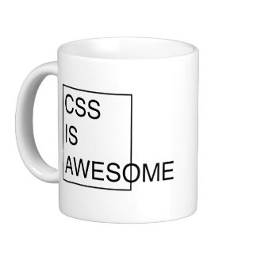
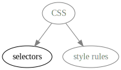
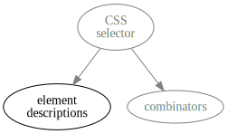
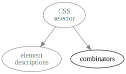
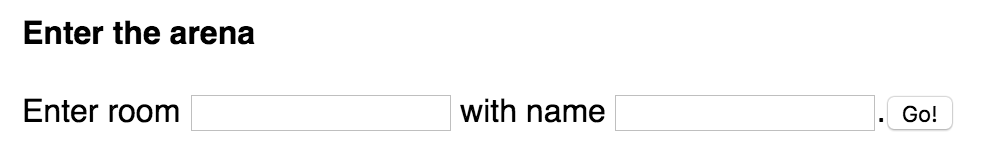
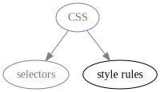
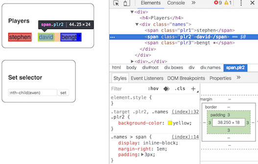
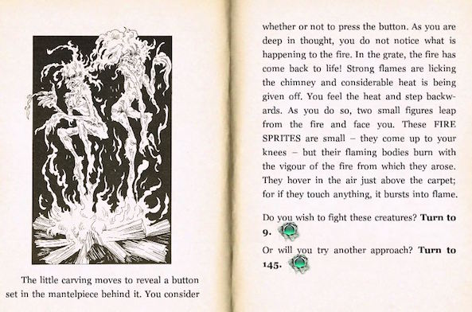

CSS basics
layout and styleNow to learn how to affect the layout and look of HTML!
Sections in this chapter
Overview
CSS from a chopper
CSS, or Cascading Style Sheets, is a language to control style and layout of HTML content.
It wasn't really designed to do much more beyond formatting text, so regarding the layout part it can feel like a bad fit and has a bad rep.

When we say CSS, we are actually talking about two different languages. Take a look at this blob:
div > p:first-child, .first, h4 {
margin-left: 2 em;
text-style: italic;
}
If we "zoom out", it could be transcribed as this:
Selector, Selector, Selector {
Style rule;
Style rule;
}
Essentially, CSS consists of selectors and style rules. All elements matching the selectors will get the style rules.
So learning CSS means learning both of these!
CSS selectors
The targeting mechanism
Let's look at the first part of CSS - selectors!

Just like CSS splits into selectors and style rules, so does selectors split into descriptions and combinators.
These are again two completely different things, so we can even make the case that CSS consists of 3 different languages!
We touched on CSS' bad rep for not being very good at doing layout.
CSS selectors, however, are very good at what they do, namely select a subset of elements from a document.
In fact, CSS selectors are so efficient that JavaScript stole them, because they got the job done better than the programmatic interface that existed before!
Many modern JS frameworks also use CSS selectors, so all in all there are many good reasons to learn them well.
So let's go do that!
Element descriptions
The wanted poster
The most important part of a CSS selector is to describe elements that should be selected.

There are five different aspects that we can describe, each with its own syntax:
These can be combined however you see fit. Here is an (exaggerated) example using all of them:
button[disabled]#deletemsg.big:first-child
This would match all
- nodes of type buttons
- that has a disabled attribute
- and id is
deletemsg - and class attribute contains 'big'
- and it is the first child of its parent
As per usual the details can be found on MDN:
https://developer.mozilla.org/en-US/docs/Glossary/CSS_Selector
However, we will now make a few observations for each of the five aspects.
Some notes on the type description:
div
- There's no special syntax, just write out the type.
- They are optional, we can make a description with just other aspects.
- An asterisk
*is a wildcard (sometimes called "universal selector"), but rarely useful.
The id description...
#app-wrapper
- refers to the generic attribute we saw in the HTML chapter
- is prefixed with a
# - will (or should) only ever match 1 (or 0) elements.
The class description...
.container
- again refers to a generic attribute
- is prefixed with a
. - can have multiple classes:
.container.highlight
The attributes description...
[disabled] [foo="bar"] [href^="http"]
- is probably the most complex description aspect
- matches elements depending on attributes and their values
- is surrounded by brackets
- can test simply for attribute existence by just mentioning the attribute
- can test attribute value by using
=and the wanted value - can match value beginning by using
^=
Quiz: Ok, so ^= allows us to match against the beginning of an attribute value. But what would be the point of that last example we saw?
[href^="http"]
Answer: If all local links are relative, which is normally the case, then this would be an excellent way to catch all external links, to make them look or behave differently.
Finally some notes on the pseudo-classes:
:first-child :nth-child(2) :active
- They are prefixed with
: - They allow matching on position or state
- Some take arguments which are given within parenthesis
- The
:not()class takes a full CSS selector - They are obscure but really powerful, so worth getting to know!
Combinators
Many wanted posters!
Let's now look at the other half of selectors, namely how we combine descriptions!

There are four different ways that descriptions can be combined, which we'll look at one at a time:
The perhaps most common one is the descendant combinator. By having two descriptions with space between...
div p
...we match all elements that
- match the last description
- have an ancestor matching the first description. This can be any number of generations up the tree.
I think it is unfortunate that the descendant combinators doesn't have a non-space symbol, something like this:
div _ p
Whitespace elsewhere in CSS doesn't have meaning, but here it suddenly does. To help with this, think of descendant combinators as invisible symbols!
div > p
The child combinator is very similar to descendant selector, but here the first selector must match the parent and not just any ancestor.
Thus the child combinator is smaller in scope than the descendant combinator.
div ~ p
The sibling combinator is similar to the descendant combinator, but works horisontally instead: it matches elements that...
- match the last description
- have an older sibling that matches the first description
div + p
Finally the adjacent sibling combinator works in the exact same way, but requires the neighbouring older sibling to match the first description.
The two sibling combinators are not often used, but they are good at what they do.
Solving that problem with other means would require brittle workarounds, something you often see from web developers who don't know about them.
Exercise - Battle
2 (or 3) goes in, 1 comes out
This is a small intermission exercise to do some practicing on CSS selectors. You'll need...
- a reference at the ready - MDN works fine
- an opponent or two. Literaly - you must be 2 or 3 people.
Go to http://blog.krawaller.se/cssbattle/, and you're met with this simple form:

Enter the same room as your opponent(s), but using different names. You will then all end up in the same battle arena:

Each of you can set your selector, and everyone sees everyone's results.
There are no hardcoded rules, but we suggest you take turn to make a selection, and then the other(s) should make the same selection as fast as possible.
Inclusion
smuggling in the paint
There are 3 different ways in which we can apply CSS to our content:
- linking to a separate
.cssfile - putting it into a
styletag - inlining it in the
styleattribute of an element
(We can also mutate styles dynamically with JavaScript, but that comes later!)
A separate file means using a <link> element:
<!DOCTYPE html>
<html>
<head>
<link rel="stylesheet" href="styles/mystyles.css">
</head>
<body>
<!-- lots of HTML content here -->
</body>
</html>
The <style> element simply wraps the CSS code. It can go anywhere, but customarily in the head:
<!DOCTYPE html>
<html>
<head>
<style>
/* Lots of CSS code here */
</style>
</head>
<body>
<!-- lots of HTML content here -->
</body>
</html>
Inlining in the style attribute means we don't need selectors, since the style rules are applied to this particular element.
<p style="font-weight: bold;">It will never happen again.</p>
Quiz: Which method do you think is the most common, and why?
Answer: In almost all situations a separate file is preferred, since that gives us a good separation of concerns. Style tags arguably gives us that too, so the primary thing is to be careful with inlining styles.
Basic styles
lipstick on a p
We spent a lot of time talking about selectors. Now for the style rules!

The syntax is simple enough:
font-weight: bold;
- You type out the property you want to style,
- then a colon separator,
- followed by the value for the property,
- and finally an ending semicolon.
We can have as many rules as we want within the brackets:
.article p {
font-weight: normal;
background-color: #EEE;
margin-bottom: 1.5em;
}
So, what properties can we style? Lots and lots! For this basic section, here follows a few you need to know!
In all four cardinal directions you can apply padding and margin to an element. The inner div has:
div {
background-color: magenta;
padding-left: 2em;
margin-left: 1em;
}
In essence, padding becomes part of the element while margin sizes the void around it that no other element can enter.
Between the margin and padding you can apply a border.
div {
background-color: magenta;
padding-left: 2em;
margin-left: 1em;
border-left: 3px solid red;
}
If you want the same margin/padding/border in all directions, there is a shorthand:
border: 3px solid red;
You've already seen background-color - the good twin to that is color which colours the text.
The color property is inherited to children, a trait it shares with some other properties.
As we said there are many more properties, but now you have enough to get started.
Note that these properties were all for looks - next chapter we'll talk more about layout!
The browser devtools
Your new BFF
Contrary to the web developer of yesteryear, today we have very powerful developer tools built into almost all browsers. We'll be looking at Chrome, but there are analogs in the others.
They show you the element tree and provide info on specific elements.

This is especially useful for
- CSS debugging, as you can see exactly what styles are applied and from where and with which selectors they came.
- CSS experimenting, as you can toggle the styles, try out new values and even add completely new styles.
Exercise - Style the game
Hiring an illustrator
Time to return to your choose-your-own-adventure and make it slightly less drab!

In other words: add some CSS to the site you made earlier!
Since we want the same styling on all pages, and aren't using any templating system, you should put the styles in a style sheet which you then link into all pages.
How pretty must it be? Not very, but here are some suggestions:
- Find a style for each different section (header, main, footer, text, links, etc), and try to make them look clearly defined.
- Also make a good container for the entire app. These commonly have side margins.
- Experiment with typography. Try out different fonts, letter spacing and line spacing.
We encourage you to use this as an excuse to get to know the dev tools. You should do the experimenting in there, and only add the CSS code when you have a good idea of what you want.
Challenge:, use the :first-child and :first-letter pseudoclasses to make some nice drop caps.

There are some good pointers at CSS-Tricks: https://css-tricks.com/snippets/css/drop-caps/
Challenge: Use the @font-face feature to bring in some more game-like font!

You can also cheat by using https://fonts.google.com.
Don't overwrite the old files - copy them into a new folder.
Then to submit the exercise:
- navigate to
/submissions/gamev2in your fork ofacademysubs - create a folder with your user name there
- copy the styled site files into the folder.
- push and make a pull request
Challenge: If you grow bored with styling your game - do a pull request to the CSS battle app to make it look less crap!
The git repo is at https://github.com/krawaller/cssbattle, and my sad CSS is in styles.css in the root.